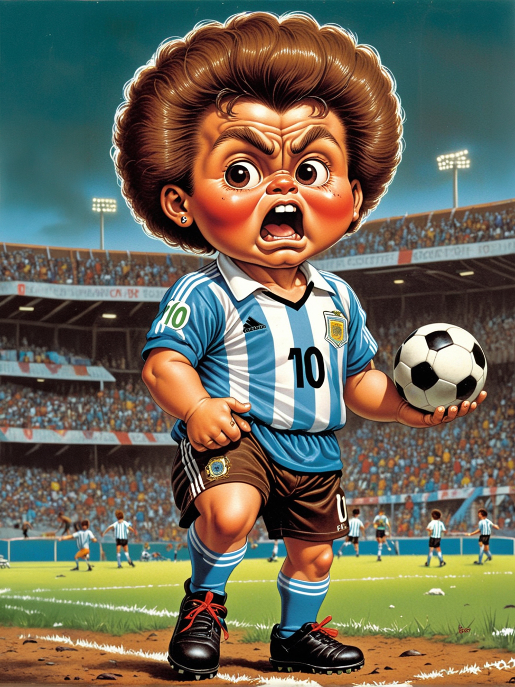

Little Players
A character study built with Stable Diffusion and a custom LoRA model.
The project explores the creation of a fictional sports figure: loud, temperamental and strangely childlike, with the emotional intensity of a grown-up football idol compressed into the body language of a young player.
Little Players uses AI image-making as a way to test character consistency, facial exaggeration and visual identity across multiple scenes, building a surreal portrait of competition, ego and childhood mythology.
2026


